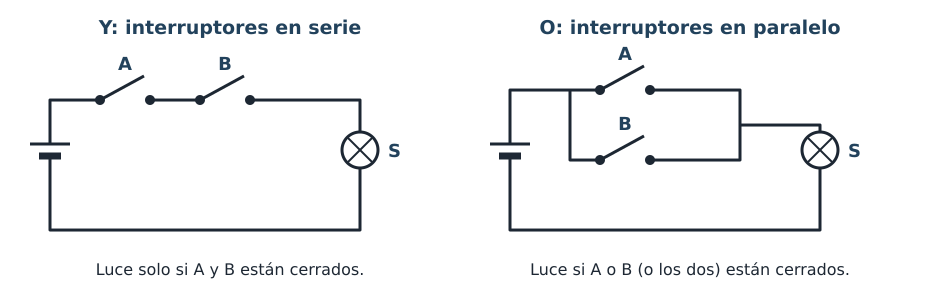

Cuando decides algo, usas tres palabras muy pequeñas: no, y, o. «Salgo al recreo si suena el timbre y el profe nos deja». «Me pongo el abrigo si hace frío o llueve». «Enciendo la luz si no hay luz natural». Los circuitos digitales deciden con esas mismas tres palabras.
Y, O con interruptores
Puedes ver el Y y el O con dos interruptores y una lámpara:

Puerta lógica
Una puerta lógica es un circuito que recibe entradas de 0 y 1 y da una salida de 0 o 1 siguiendo siempre la misma regla. Cada puerta tiene un nombre (en inglés), un símbolo para dibujarla y una tabla de verdad.
Una tabla de verdad muestra la salida para todas las combinaciones posibles de las entradas. Con dos entradas hay cuatro combinaciones: 00, 01, 10 y 11. Se ordenan así, contando en binario, para no olvidar ninguna.
Las tres puertas básicas
Cada puerta se puede escribir también con una expresión, la forma corta de su regla: el punto (·) se lee «y», el signo + se lee «o» y la barra encima se lee «no». Así, A · B se lee «A y B».
| Puerta | Se lee | Regla | Expresión |
|---|---|---|---|
| NOT | NO | La salida es lo contrario de la entrada. Tiene una sola entrada. | S = no A |
| AND | Y | S = 1 solo si todas las entradas valen 1. | S = A · B |
| OR | O | S = 1 si al menos una entrada vale 1. | S = A + B |
En el laboratorio, pulsa las entradas A y B y observa el símbolo, la salida y la fila de la tabla que se resalta. También puedes pulsar directamente una fila de la tabla.
Ejemplo resuelto: la tabla de la alarma
La sirena suena si la alarma está conectada (C = 1) y el sensor detecta la puerta abierta (P = 1). Es una puerta AND: S = C · P.
| C | P | S |
|---|---|---|
| 0 | 0 | 0 |
| 0 | 1 | 0 |
| 1 | 0 | 0 |
| 1 | 1 | 1 |
Solo en la última fila se cumplen las dos condiciones a la vez, y solo ahí suena la sirena. En la fila C = 0, P = 1 alguien abre la puerta, pero la alarma está desconectada: no suena.
Actividad guiada: ¿qué puerta es?
- La luz del baño se enciende con el interruptor de la puerta o con el de dentro.
- Una guillotina de papel solo corta si se pulsan sus dos botones a la vez (así las dos manos quedan lejos de la cuchilla).
- La luz de emergencia se enciende cuando no llega corriente de la red.
Comprueba tu respuesta
- OR: basta con uno de los dos interruptores.
- AND: hacen falta los dos botones a la vez.
- NOT: la luz vale lo contrario de «llega corriente».
Practica tú: predice antes de mirar
En el laboratorio, pulsa Predecir. Ahora la salida está oculta: para cada combinación, decide si S vale 0 o 1 y pulsa tu respuesta. Si fallas, te da una pista y puedes volver a intentarlo. Completa así las tablas de NOT, AND y OR.
Después, sin el laboratorio: ¿cuánto vale S en cada caso?
- AND con A = 1 y B = 0.
- OR con A = 0 y B = 0.
- NOT con A = 1.
- OR con A = 1 y B = 1.
Comprueba tu respuesta
- S = 0: a la AND le falta que B valga 1.
- S = 0: ninguna entrada vale 1.
- S = 0: la NOT da lo contrario de 1.
- S = 1: en la OR basta con una, y aquí valen las dos.